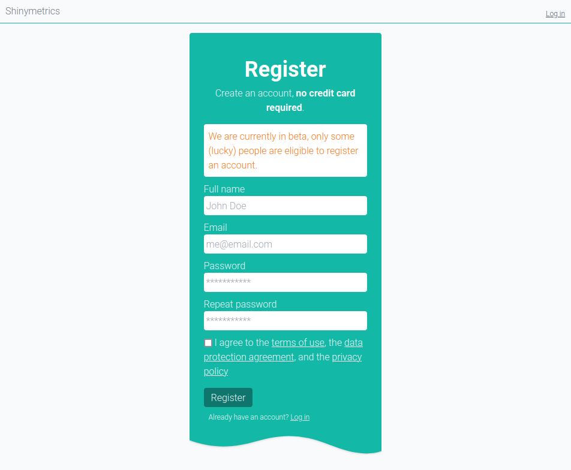
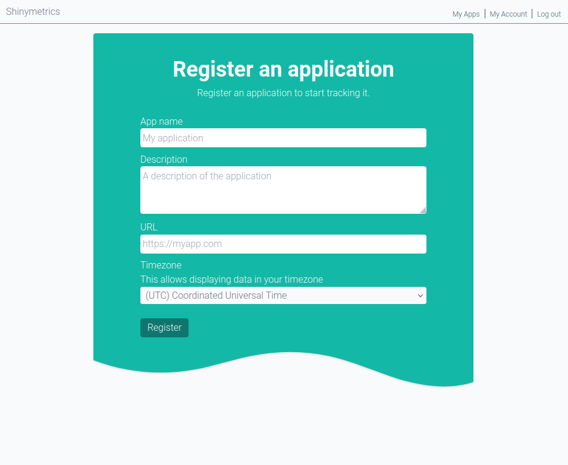
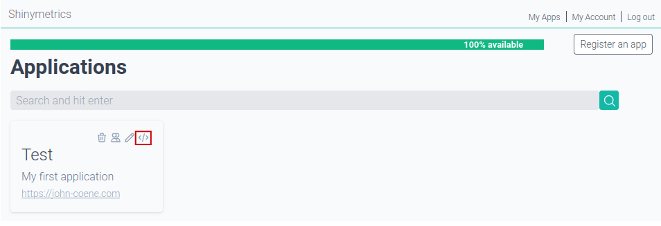
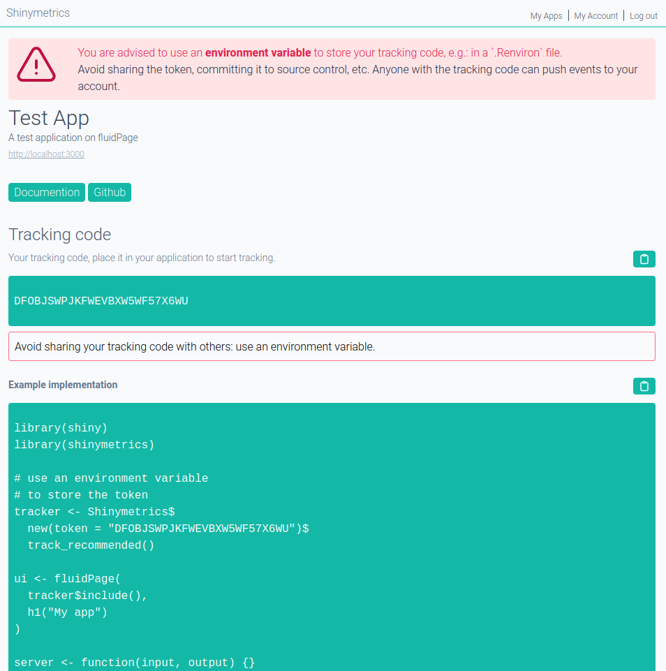

Get Started
get-started.Rmd1. Create an Account
Create a free account on shinymetrics, this will not require you to enter any credit card information.

After creating your account please check your inbox for an email coming from hello@shinymetrics.com for an activation link.
2. Register an App
After your account has been created and activated you are able to login and register your first application.
Login and visit “My Apps” (top right) then click the “Register an app” button and fill in the form adequately.

3. Get your tracking code
Once the app registered it will appear on your main dashboard. Click the icon to obtain your tracking code.

4. Track your app
Follow the instructions on this page to implement tracking in your application.
You are responsible for obtaining consent from users before tracking. By default, the shinymetrics R package DOES NOT track anything. See the documentation on consent for more information.
